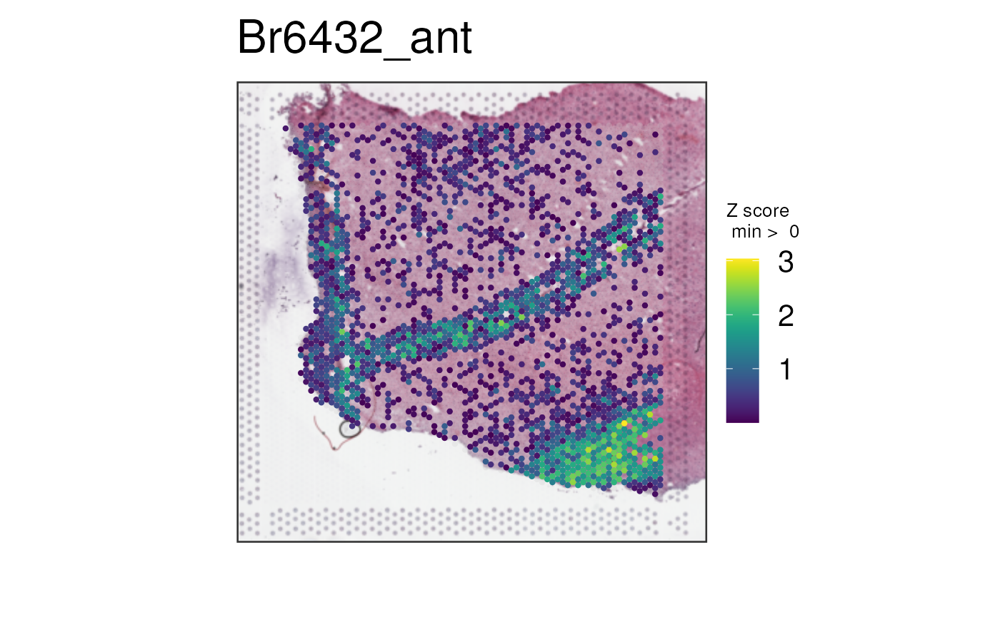
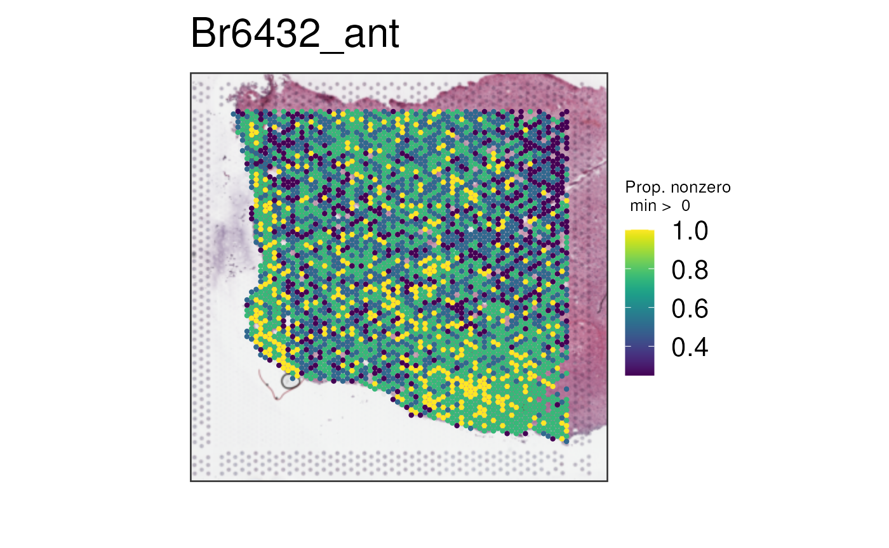
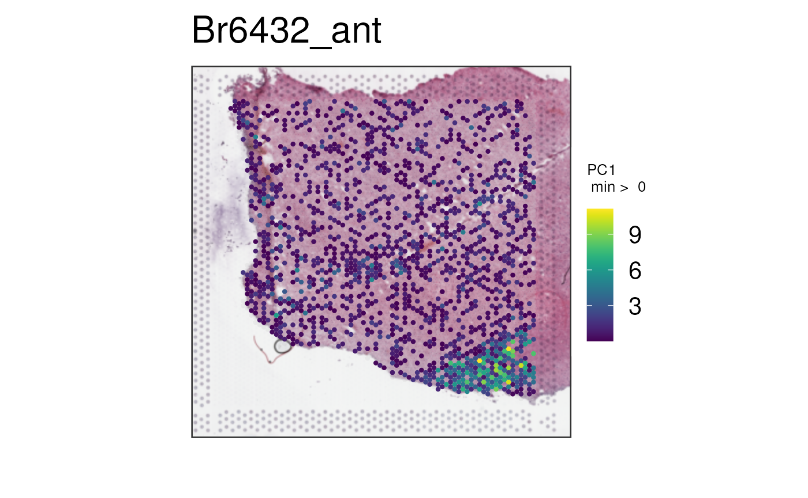
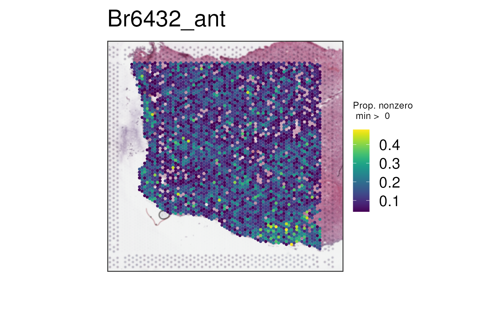

vignettes/multi_gene_plots.Rmd
multi_gene_plots.RmdOne of the goals of spatialLIBD is to provide options
for visualizing Visium data by 10x Genomics. In particular,
vis_gene() and vis_clus() allow plotting of
individual continuous or discrete quantities belonging to each Visium
spot, in a spatially accurate manner and optionally atop histology
images.
This vignette explores a more complex capability of
vis_gene(): to visualize a summary metric of several
continuous variables simultaneously. We’ll start with a basic one-gene
use case for vis_gene() before moving to more advanced
cases.
First, let’s load some example data for us to work on. This data is a subset from a recent publication with Visium data from the dorsolateral prefrontal cortex (DLPFC) (Huuki-Myers, Spangler, Eagles, Montgomergy, Kwon, Guo, Grant-Peters, Divecha, Tippani, Sriworarat, Nguyen, Ravichandran, Tran, Seyedian, Consortium, Hyde, Kleinman, Battle, Page, Ryten, Hicks, Martinowich, Collado-Torres, and Maynard, 2024).
library("spatialLIBD")
spe <- fetch_data(type = "spatialDLPFC_Visium_example_subset")
spe
#> class: SpatialExperiment
#> dim: 28916 12107
#> metadata(1): BayesSpace.data
#> assays(2): counts logcounts
#> rownames(28916): ENSG00000243485 ENSG00000238009 ... ENSG00000278817
#> ENSG00000277196
#> rowData names(7): source type ... gene_type gene_search
#> colnames(12107): AAACAAGTATCTCCCA-1 AAACACCAATAACTGC-1 ...
#> TTGTTTGTATTACACG-1 TTGTTTGTGTAAATTC-1
#> colData names(155): age array_col ... VistoSeg_proportion wrinkle_type
#> reducedDimNames(8): 10x_pca 10x_tsne ... HARMONY UMAP.HARMONY
#> mainExpName: NULL
#> altExpNames(0):
#> spatialCoords names(2) : pxl_col_in_fullres pxl_row_in_fullres
#> imgData names(4): sample_id image_id data scaleFactorNext, let’s define several genes known to be markers for white matter (Tran, Maynard, Spangler, Huuki, Montgomery, Sadashivaiah, Tippani, Barry, Hancock, Hicks, Kleinman, Hyde, Collado-Torres, Jaffe, and Martinowich, 2021).
white_matter_genes <- c("GFAP", "AQP4", "MBP", "PLP1")
white_matter_genes <- rowData(spe)$gene_search[
rowData(spe)$gene_name %in% white_matter_genes
]
## Our list of white matter genes
white_matter_genes
#> [1] "GFAP; ENSG00000131095" "AQP4; ENSG00000171885" "MBP; ENSG00000197971"
#> [4] "PLP1; ENSG00000123560"A typical use of vis_gene() involves plotting the
spatial distribution of a single gene or continuous variable of
interest. For example, let’s plot just the expression of
GFAP.
vis_gene(
spe,
geneid = white_matter_genes[1],
point_size = 1.5
)We can see a little V shaped section with higher expression of this gene. This seems to mark the location of layer 1. The bottom right corner seems to mark the location of white matter.
This particular gene is known to have high expression in both layer 1 and white matter in the dorsolateral prefrontal cortex as can be seen below (Maynard, Collado-Torres, Weber, Uytingco, Barry, Williams, II, Tran, Besich, Tippani, Chew, Yin, Kleinman, Hyde, Rao, Hicks, Martinowich, and Jaffe, 2021). It’s the 386th highest ranked white matter marker gene based on the enrichment test.
modeling_results <- fetch_data(type = "modeling_results")
#> 2024-07-26 23:52:30.742985 loading file /github/home/.cache/R/BiocFileCache/39274193f32_Human_DLPFC_Visium_modeling_results.Rdata%3Fdl%3D1
sce_layer <- fetch_data(type = "sce_layer")
#> 2024-07-26 23:52:31.642591 loading file /github/home/.cache/R/BiocFileCache/39273a37ebf_Human_DLPFC_Visium_processedData_sce_scran_sce_layer_spatialLIBD.Rdata%3Fdl%3D1
sig_genes <- sig_genes_extract_all(
n = 400,
modeling_results = modeling_results,
sce_layer = sce_layer
)
i_gfap <- subset(sig_genes, gene == "GFAP" &
test == "WM")$top
i_gfap
#> [1] 386
set.seed(20200206)
layer_boxplot(
i = i_gfap,
sig_genes = sig_genes,
sce_layer = sce_layer
)As of version 1.15.2, the geneid parameter to
vis_gene() may also take a vector of genes or continuous
variables in colData(spe). In this way, the expression of
multiple continuous variables can be summarized into a single value for
each spot, displayed just as a single input for geneid
would be. spatialLIBD provides three methods for merging
the information from multiple continuous variables, which may be
specified through the multi_gene_method parameter to
vis_gene().
The default is multi_gene_method = "z_score".
Essentially, each continuous variable (could be a mix of genes with
spot-level covariates) is normalized to be a Z-score by centering and
scaling. If a particular spot has a value of 1 for a
particular continuous variable, this would indicate that spot has
expression one standard deviation above the mean expression across all
spots for that continuous variable. Next, for each spot, Z-scores are
averaged across continuous variables. Compared to simply averaging raw
gene expression across genes, the "z_score" method is
insensitive to absolute expression levels (highly expressed genes don’t
dominate plots), and instead focuses on how each gene varies spatially,
weighting each gene equally.
Let’s plot all four white matter genes using this method.
vis_gene(
spe,
geneid = white_matter_genes,
multi_gene_method = "z_score",
point_size = 1.5
)
Now the bottom right corner where the white matter is located starts to pop up more, though the mixed layer 1 and white matter signal provided by GFAP is still noticeable (the V shape).
Another option is multi_gene_method = "pca". A matrix is
formed, where genes or continuous features are columns, and spots are
rows. PCA is performed, and the first principal component is plotted
spatially. The idea is that the first PC captures the dominant spatial
signature of the feature set. Next, its direction is reversed if the
majority of coefficients (from the “rotation matrix”) across features
are negative. When the features are genes whose expression is highly
correlated (like our white-matter-gene example!), this optional reversal
encourages higher values in the plot to represent areas of higher
expression of the features. For our case, this leads to the intuitive
result that “expression” is higher in white matter for white-matter
genes, which is not otherwise guaranteed (the “sign” of PCs is
arbitrary)!
vis_gene(
spe,
geneid = white_matter_genes,
multi_gene_method = "pca",
point_size = 1.5
)This final option is multi_gene_method = "sparsity". For
each spot, the proportion of features with positive expression is
plotted. This method is typically only meaningful when features are raw
gene counts that are expected to be quite sparse (have zero counts) at
certain regions of the tissue and not others. It also performs better
with a larger number of genes; with our example of four white-matter
genes, the proportion may only hold values of 0, 0.25, 0.5, 0.75, and 1,
which is not visually informative.
The white-matter example is thus poor due to lack of sparsity and low number of genes as you can see below.
vis_gene(
spe,
geneid = white_matter_genes,
multi_gene_method = "sparsity",
point_size = 1.5
)
Below we can plot via multi_gene_method = "z_score" the
top 25 or top 50 white matter marker genes identified via the enrichment
test in a previous dataset (Maynard, Collado-Torres, Weber et al.,
2021).
vis_gene(
spe,
geneid = subset(sig_genes, test == "WM")$ensembl[seq_len(25)],
multi_gene_method = "z_score",
point_size = 1.5
)
vis_gene(
spe,
geneid = subset(sig_genes, test == "WM")$ensembl[seq_len(50)],
multi_gene_method = "z_score",
point_size = 1.5
)We can repeat this process for
multi_gene_method = "pca".
vis_gene(
spe,
geneid = subset(sig_genes, test == "WM")$ensembl[seq_len(25)],
multi_gene_method = "pca",
point_size = 1.5
)
vis_gene(
spe,
geneid = subset(sig_genes, test == "WM")$ensembl[seq_len(50)],
multi_gene_method = "pca",
point_size = 1.5
)And finally, lets look at the results of
multi_gene_method = "sparsity".
vis_gene(
spe,
geneid = subset(sig_genes, test == "WM")$ensembl[seq_len(25)],
multi_gene_method = "sparsity",
point_size = 1.5
)
vis_gene(
spe,
geneid = subset(sig_genes, test == "WM")$ensembl[seq_len(50)],
multi_gene_method = "sparsity",
point_size = 1.5
)In this case, it seems that for both the top 25 or top 50 marker
genes, z_score and pca provided cleaner
visualizations than sparsity. Give them a try on your own
datasets!
So far, we have only visualized multiple genes. But these methods can
be applied to several continuous variables stored in
colData(spe) as shown below.
We can also combine continuous variables from
colData(spe) along with actual genes. We can combine for
example the expression of GFAP, which is a known astrocyte
marker gene, with the spot deconvolution results for astrocytes computed
using Tangram (Huuki-Myers, Spangler, Eagles et al., 2024).
vis_gene(
spe,
geneid = c("broad_tangram_astro", white_matter_genes[1]),
multi_gene_method = "pca",
point_size = 1.5
)These tools enable you to further explore your data in new ways. Have fun using them!
Code for creating the vignette
## Create the vignette
library("rmarkdown")
system.time(render("multi_gene_plots.Rmd"))
## Extract the R code
library("knitr")
knit("multi_gene_plots.Rmd", tangle = TRUE)Date the vignette was generated.
#> [1] "2024-07-26 23:52:47 UTC"Wallclock time spent generating the vignette.
#> Time difference of 36.798 secsR session information.
#> ─ Session info ───────────────────────────────────────────────────────────────────────────────────────────────────────
#> setting value
#> version R version 4.4.1 (2024-06-14)
#> os Ubuntu 22.04.4 LTS
#> system x86_64, linux-gnu
#> ui X11
#> language en
#> collate en_US.UTF-8
#> ctype en_US.UTF-8
#> tz UTC
#> date 2024-07-26
#> pandoc 3.2 @ /usr/bin/ (via rmarkdown)
#>
#> ─ Packages ───────────────────────────────────────────────────────────────────────────────────────────────────────────
#> package * version date (UTC) lib source
#> abind 1.4-5 2016-07-21 [1] RSPM (R 4.4.0)
#> AnnotationDbi 1.66.0 2024-05-01 [1] Bioconductor 3.19 (R 4.4.1)
#> AnnotationHub 3.12.0 2024-04-30 [1] Bioconductor 3.19 (R 4.4.1)
#> attempt 0.3.1 2020-05-03 [1] RSPM (R 4.4.0)
#> backports 1.5.0 2024-05-23 [1] RSPM (R 4.4.0)
#> beachmat 2.20.0 2024-04-30 [1] Bioconductor 3.19 (R 4.4.1)
#> beeswarm 0.4.0 2021-06-01 [1] RSPM (R 4.4.0)
#> benchmarkme 1.0.8 2022-06-12 [1] RSPM (R 4.4.0)
#> benchmarkmeData 1.0.4 2020-04-23 [1] RSPM (R 4.4.0)
#> bibtex 0.5.1 2023-01-26 [1] RSPM (R 4.4.0)
#> Biobase * 2.64.0 2024-04-30 [1] Bioconductor 3.19 (R 4.4.1)
#> BiocFileCache 2.12.0 2024-04-30 [1] Bioconductor 3.19 (R 4.4.1)
#> BiocGenerics * 0.50.0 2024-04-30 [1] Bioconductor 3.19 (R 4.4.1)
#> BiocIO 1.14.0 2024-04-30 [1] Bioconductor 3.19 (R 4.4.1)
#> BiocManager 1.30.23 2024-05-04 [2] CRAN (R 4.4.1)
#> BiocNeighbors 1.22.0 2024-04-30 [1] Bioconductor 3.19 (R 4.4.1)
#> BiocParallel 1.38.0 2024-04-30 [1] Bioconductor 3.19 (R 4.4.1)
#> BiocSingular 1.20.0 2024-04-30 [1] Bioconductor 3.19 (R 4.4.1)
#> BiocStyle * 2.32.1 2024-06-16 [1] Bioconductor 3.19 (R 4.4.1)
#> BiocVersion 3.19.1 2024-04-17 [2] Bioconductor 3.19 (R 4.4.1)
#> Biostrings 2.72.1 2024-06-02 [1] Bioconductor 3.19 (R 4.4.1)
#> bit 4.0.5 2022-11-15 [1] RSPM (R 4.4.0)
#> bit64 4.0.5 2020-08-30 [1] RSPM (R 4.4.0)
#> bitops 1.0-7 2021-04-24 [1] RSPM (R 4.4.0)
#> blob 1.2.4 2023-03-17 [1] RSPM (R 4.4.0)
#> bookdown 0.40 2024-07-02 [1] RSPM (R 4.4.0)
#> bslib 0.7.0 2024-03-29 [2] RSPM (R 4.4.0)
#> cachem 1.1.0 2024-05-16 [2] RSPM (R 4.4.0)
#> cli 3.6.3 2024-06-21 [2] RSPM (R 4.4.0)
#> codetools 0.2-20 2024-03-31 [3] CRAN (R 4.4.1)
#> colorspace 2.1-0 2023-01-23 [1] RSPM (R 4.4.0)
#> config 0.3.2 2023-08-30 [1] RSPM (R 4.4.0)
#> cowplot 1.1.3 2024-01-22 [1] RSPM (R 4.4.0)
#> crayon 1.5.3 2024-06-20 [2] RSPM (R 4.4.0)
#> curl 5.2.1 2024-03-01 [2] RSPM (R 4.4.0)
#> data.table 1.15.4 2024-03-30 [1] RSPM (R 4.4.0)
#> DBI 1.2.3 2024-06-02 [1] RSPM (R 4.4.0)
#> dbplyr 2.5.0 2024-03-19 [1] RSPM (R 4.4.0)
#> DelayedArray 0.30.1 2024-05-07 [1] Bioconductor 3.19 (R 4.4.1)
#> DelayedMatrixStats 1.26.0 2024-04-30 [1] Bioconductor 3.19 (R 4.4.1)
#> desc 1.4.3 2023-12-10 [2] RSPM (R 4.4.0)
#> digest 0.6.36 2024-06-23 [2] RSPM (R 4.4.0)
#> doParallel 1.0.17 2022-02-07 [1] RSPM (R 4.4.0)
#> dotCall64 1.1-1 2023-11-28 [1] RSPM (R 4.4.0)
#> dplyr 1.1.4 2023-11-17 [1] RSPM (R 4.4.0)
#> DT 0.33 2024-04-04 [1] RSPM (R 4.4.0)
#> edgeR 4.2.1 2024-07-14 [1] Bioconductor 3.19 (R 4.4.1)
#> evaluate 0.24.0 2024-06-10 [2] RSPM (R 4.4.0)
#> ExperimentHub 2.12.0 2024-04-30 [1] Bioconductor 3.19 (R 4.4.1)
#> fansi 1.0.6 2023-12-08 [2] RSPM (R 4.4.0)
#> farver 2.1.2 2024-05-13 [1] RSPM (R 4.4.0)
#> fastmap 1.2.0 2024-05-15 [2] RSPM (R 4.4.0)
#> fields 16.2 2024-06-27 [1] RSPM (R 4.4.0)
#> filelock 1.0.3 2023-12-11 [1] RSPM (R 4.4.0)
#> foreach 1.5.2 2022-02-02 [1] RSPM (R 4.4.0)
#> fs 1.6.4 2024-04-25 [2] RSPM (R 4.4.0)
#> generics 0.1.3 2022-07-05 [1] RSPM (R 4.4.0)
#> GenomeInfoDb * 1.40.1 2024-05-24 [1] Bioconductor 3.19 (R 4.4.1)
#> GenomeInfoDbData 1.2.12 2024-06-25 [1] Bioconductor
#> GenomicAlignments 1.40.0 2024-04-30 [1] Bioconductor 3.19 (R 4.4.1)
#> GenomicRanges * 1.56.1 2024-06-12 [1] Bioconductor 3.19 (R 4.4.1)
#> ggbeeswarm 0.7.2 2023-04-29 [1] RSPM (R 4.4.0)
#> ggplot2 3.5.1 2024-04-23 [1] RSPM (R 4.4.0)
#> ggrepel 0.9.5 2024-01-10 [1] RSPM (R 4.4.0)
#> glue 1.7.0 2024-01-09 [2] RSPM (R 4.4.0)
#> golem 0.4.1 2023-06-05 [1] RSPM (R 4.4.0)
#> gridExtra 2.3 2017-09-09 [1] RSPM (R 4.4.0)
#> gtable 0.3.5 2024-04-22 [1] RSPM (R 4.4.0)
#> highr 0.11 2024-05-26 [2] RSPM (R 4.4.0)
#> htmltools 0.5.8.1 2024-04-04 [2] RSPM (R 4.4.0)
#> htmlwidgets 1.6.4 2023-12-06 [2] RSPM (R 4.4.0)
#> httpuv 1.6.15 2024-03-26 [2] RSPM (R 4.4.0)
#> httr 1.4.7 2023-08-15 [2] RSPM (R 4.4.0)
#> IRanges * 2.38.1 2024-07-03 [1] Bioconductor 3.19 (R 4.4.1)
#> irlba 2.3.5.1 2022-10-03 [1] RSPM (R 4.4.0)
#> iterators 1.0.14 2022-02-05 [1] RSPM (R 4.4.0)
#> jquerylib 0.1.4 2021-04-26 [2] RSPM (R 4.4.0)
#> jsonlite 1.8.8 2023-12-04 [2] RSPM (R 4.4.0)
#> KEGGREST 1.44.1 2024-06-19 [1] Bioconductor 3.19 (R 4.4.1)
#> knitr 1.48 2024-07-07 [2] RSPM (R 4.4.0)
#> labeling 0.4.3 2023-08-29 [1] RSPM (R 4.4.0)
#> later 1.3.2 2023-12-06 [2] RSPM (R 4.4.0)
#> lattice 0.22-6 2024-03-20 [3] CRAN (R 4.4.1)
#> lazyeval 0.2.2 2019-03-15 [1] RSPM (R 4.4.0)
#> lifecycle 1.0.4 2023-11-07 [2] RSPM (R 4.4.0)
#> limma 3.60.4 2024-07-17 [1] Bioconductor 3.19 (R 4.4.1)
#> locfit 1.5-9.10 2024-06-24 [1] RSPM (R 4.4.0)
#> lubridate 1.9.3 2023-09-27 [1] RSPM (R 4.4.0)
#> magick 2.8.4 2024-07-14 [1] RSPM (R 4.4.0)
#> magrittr 2.0.3 2022-03-30 [2] RSPM (R 4.4.0)
#> maps 3.4.2 2023-12-15 [1] RSPM (R 4.4.0)
#> Matrix 1.7-0 2024-04-26 [3] CRAN (R 4.4.1)
#> MatrixGenerics * 1.16.0 2024-04-30 [1] Bioconductor 3.19 (R 4.4.1)
#> matrixStats * 1.3.0 2024-04-11 [1] RSPM (R 4.4.0)
#> memoise 2.0.1 2021-11-26 [2] RSPM (R 4.4.0)
#> mime 0.12 2021-09-28 [2] RSPM (R 4.4.0)
#> munsell 0.5.1 2024-04-01 [1] RSPM (R 4.4.0)
#> paletteer 1.6.0 2024-01-21 [1] RSPM (R 4.4.0)
#> pillar 1.9.0 2023-03-22 [2] RSPM (R 4.4.0)
#> pkgconfig 2.0.3 2019-09-22 [2] RSPM (R 4.4.0)
#> pkgdown 2.1.0 2024-07-06 [2] RSPM (R 4.4.0)
#> plotly 4.10.4 2024-01-13 [1] RSPM (R 4.4.0)
#> plyr 1.8.9 2023-10-02 [1] RSPM (R 4.4.0)
#> png 0.1-8 2022-11-29 [1] RSPM (R 4.4.0)
#> promises 1.3.0 2024-04-05 [2] RSPM (R 4.4.0)
#> purrr 1.0.2 2023-08-10 [2] RSPM (R 4.4.0)
#> R6 2.5.1 2021-08-19 [2] RSPM (R 4.4.0)
#> ragg 1.3.2 2024-05-15 [2] RSPM (R 4.4.0)
#> rappdirs 0.3.3 2021-01-31 [2] RSPM (R 4.4.0)
#> RColorBrewer 1.1-3 2022-04-03 [1] RSPM (R 4.4.0)
#> Rcpp 1.0.13 2024-07-17 [2] RSPM (R 4.4.0)
#> RCurl 1.98-1.16 2024-07-11 [1] RSPM (R 4.4.0)
#> RefManageR * 1.4.0 2022-09-30 [1] RSPM (R 4.4.0)
#> rematch2 2.1.2 2020-05-01 [2] RSPM (R 4.4.0)
#> restfulr 0.0.15 2022-06-16 [1] RSPM (R 4.4.1)
#> rjson 0.2.21 2022-01-09 [1] RSPM (R 4.4.0)
#> rlang 1.1.4 2024-06-04 [2] RSPM (R 4.4.0)
#> rmarkdown 2.27 2024-05-17 [2] RSPM (R 4.4.0)
#> Rsamtools 2.20.0 2024-04-30 [1] Bioconductor 3.19 (R 4.4.1)
#> RSQLite 2.3.7 2024-05-27 [1] RSPM (R 4.4.0)
#> rsvd 1.0.5 2021-04-16 [1] RSPM (R 4.4.0)
#> rtracklayer 1.64.0 2024-04-30 [1] Bioconductor 3.19 (R 4.4.1)
#> S4Arrays 1.4.1 2024-05-20 [1] Bioconductor 3.19 (R 4.4.1)
#> S4Vectors * 0.42.1 2024-07-03 [1] Bioconductor 3.19 (R 4.4.1)
#> sass 0.4.9 2024-03-15 [2] RSPM (R 4.4.0)
#> ScaledMatrix 1.12.0 2024-04-30 [1] Bioconductor 3.19 (R 4.4.1)
#> scales 1.3.0 2023-11-28 [1] RSPM (R 4.4.0)
#> scater 1.32.1 2024-07-21 [1] Bioconductor 3.19 (R 4.4.1)
#> scuttle 1.14.0 2024-04-30 [1] Bioconductor 3.19 (R 4.4.1)
#> sessioninfo * 1.2.2 2021-12-06 [2] RSPM (R 4.4.0)
#> shiny 1.8.1.1 2024-04-02 [2] RSPM (R 4.4.0)
#> shinyWidgets 0.8.6 2024-04-24 [1] RSPM (R 4.4.0)
#> SingleCellExperiment * 1.26.0 2024-04-30 [1] Bioconductor 3.19 (R 4.4.1)
#> spam 2.10-0 2023-10-23 [1] RSPM (R 4.4.0)
#> SparseArray 1.4.8 2024-05-24 [1] Bioconductor 3.19 (R 4.4.1)
#> sparseMatrixStats 1.16.0 2024-04-30 [1] Bioconductor 3.19 (R 4.4.1)
#> SpatialExperiment * 1.14.0 2024-05-01 [1] Bioconductor 3.19 (R 4.4.1)
#> spatialLIBD * 1.17.8 2024-07-26 [1] Bioconductor
#> statmod 1.5.0 2023-01-06 [1] RSPM (R 4.4.0)
#> stringi 1.8.4 2024-05-06 [2] RSPM (R 4.4.0)
#> stringr 1.5.1 2023-11-14 [2] RSPM (R 4.4.0)
#> SummarizedExperiment * 1.34.0 2024-05-01 [1] Bioconductor 3.19 (R 4.4.1)
#> systemfonts 1.1.0 2024-05-15 [2] RSPM (R 4.4.0)
#> textshaping 0.4.0 2024-05-24 [2] RSPM (R 4.4.0)
#> tibble 3.2.1 2023-03-20 [2] RSPM (R 4.4.0)
#> tidyr 1.3.1 2024-01-24 [1] RSPM (R 4.4.0)
#> tidyselect 1.2.1 2024-03-11 [1] RSPM (R 4.4.0)
#> timechange 0.3.0 2024-01-18 [1] RSPM (R 4.4.0)
#> UCSC.utils 1.0.0 2024-04-30 [1] Bioconductor 3.19 (R 4.4.1)
#> utf8 1.2.4 2023-10-22 [2] RSPM (R 4.4.0)
#> vctrs 0.6.5 2023-12-01 [2] RSPM (R 4.4.0)
#> vipor 0.4.7 2023-12-18 [1] RSPM (R 4.4.0)
#> viridis 0.6.5 2024-01-29 [1] RSPM (R 4.4.0)
#> viridisLite 0.4.2 2023-05-02 [1] RSPM (R 4.4.0)
#> withr 3.0.0 2024-01-16 [2] RSPM (R 4.4.0)
#> xfun 0.46 2024-07-18 [2] RSPM (R 4.4.0)
#> XML 3.99-0.17 2024-06-25 [1] RSPM (R 4.4.0)
#> xml2 1.3.6 2023-12-04 [2] RSPM (R 4.4.0)
#> xtable 1.8-4 2019-04-21 [2] RSPM (R 4.4.0)
#> XVector 0.44.0 2024-04-30 [1] Bioconductor 3.19 (R 4.4.1)
#> yaml 2.3.9 2024-07-05 [2] RSPM (R 4.4.0)
#> zlibbioc 1.50.0 2024-04-30 [1] Bioconductor 3.19 (R 4.4.1)
#>
#> [1] /__w/_temp/Library
#> [2] /usr/local/lib/R/site-library
#> [3] /usr/local/lib/R/library
#>
#> ──────────────────────────────────────────────────────────────────────────────────────────────────────────────────────This vignette was generated using BiocStyle , knitr (Xie, 2014) and rmarkdown (Allaire, Xie, Dervieux, McPherson, Luraschi, Ushey, Atkins, Wickham, Cheng, Chang, and Iannone, 2024) running behind the scenes.
Citations made with RefManageR (McLean, 2017).
[1] J. Allaire, Y. Xie, C. Dervieux, et al. rmarkdown: Dynamic Documents for R. R package version 2.27. 2024. URL: https://github.com/rstudio/rmarkdown.
[2] L. A. Huuki-Myers, A. Spangler, N. J. Eagles, et al. “A data-driven single-cell and spatial transcriptomic map of the human prefrontal cortex”. In: Science (2024). DOI: 10.1126/science.adh1938. URL: https://doi.org/10.1126/science.adh1938.
[3] K. R. Maynard, L. Collado-Torres, L. M. Weber, et al. “Transcriptome-scale spatial gene expression in the human dorsolateral prefrontal cortex”. In: Nature Neuroscience (2021). DOI: 10.1038/s41593-020-00787-0. URL: https://www.nature.com/articles/s41593-020-00787-0.
[4] M. W. McLean. “RefManageR: Import and Manage BibTeX and BibLaTeX References in R”. In: The Journal of Open Source Software (2017). DOI: 10.21105/joss.00338.
[5] M. N. Tran, K. R. Maynard, A. Spangler, et al. “Single-nucleus transcriptome analysis reveals cell-type-specific molecular signatures across reward circuitry in the human brain”. In: Neuron (2021). DOI: 10.1016/j.neuron.2021.09.001.
[6] Y. Xie. “knitr: A Comprehensive Tool for Reproducible Research in R”. In: Implementing Reproducible Computational Research. Ed. by V. Stodden, F. Leisch and R. D. Peng. ISBN 978-1466561595. Chapman and Hall/CRC, 2014.